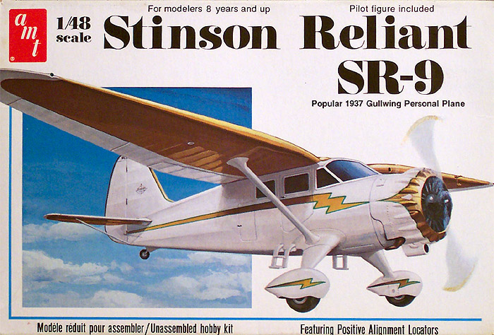
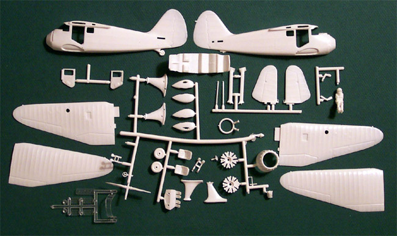
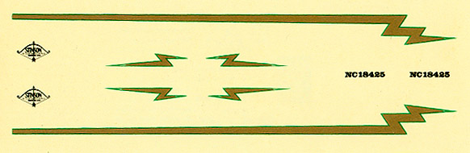

AMT 1/48 Scale Stinson SR-9 Reliant

Kit # 639601 Original MSRP $5.95 Currently, Collector�s Market Value = $14.14
Images and text Copyright � 2004 by Matt Swan
Developmental Background
Between the dark days of the Depression and WWII an aviation legend was born. A stylish aircraft with staying power, designed to go the distance in powerful manner yet with practical performance. A real class act, I am talking about the Stinson Reliant SR-9 Gullwing. This baby was a �Looker� with style, a shining example of pride and excellence in craftsmanship.
The Reliant series of aircraft was designed by E.A. "Eddie" Stinson as a four-to-five seat commercial monoplane that set the standard for the side-by-side, four seat automotive type of seating for corporate and personal aircraft. The SR series of aircraft began in 1933 and was produced until 1941. Model SR-1 through model SR-6 were straight wing designs, which established a reputation for ruggedness and reliability in both corporate and private use. In 1936 the revolutionary Gull Wing was introduced with the SR-7 model. The SR-8 and SR-9 models featured the five-seat configuration and deluxe interior accommodations that made them highly sought after executive aircraft. It was known for its ease in handling and its state of the art navigation and communication radios.
During World War Two many privately owned aircraft were requisitioned by the military for various transport and liaison duties, the SR series did not escape this process and 45 aircraft were initially requisitioned for military service. During it�s military service the aircraft was designated AT-19 in U.S. service. Between 1942 and 1945 500 Stinsons were manufactured with several internal modifications and upgraded power plants for British use, these were designated as UC-91s.
During the post-war era the Stinson AT-19 was repatriated by the United States and put on the commercial market. Because the war-surplus Gullwings were so inexpensive, US$1,500 each, commercial air carriers in Alaska bought sizable quantities for their feeder-line routes. 415 UC-91s were returned to the States but were unable to be sold due to the fact that they had never been certified as a Civilian Aircraft. Vultee bought them all up and "remanufactured" them to comply with the type certificate. This consisted of removing the military equipment, painting over the British roundels, painting on a US "N" civil number and selling them. These aircraft were certified as V-77, Vultee�s 77th design.
Nearly 60 years later these aircraft are still a highly sought after collectors item. Many are still flying while others are undergoing complete restorations and will eventually return to active service in private ownership. Stinson continued to design aircraft for many years, notably several scout aircraft and other light liaison aircraft for the military such as the L-1 Vigilant and the L-5 Sentinel.
The Kit

This kit is a relic from the 1970s and demonstrates some of the more unpleasant features that were common in the model industry of the day like raised details. This thing is covered with little tiny raised rivets all across the wings and tail surfaces. I recently had the opportunity to examine an SR-9 in person and, oddly enough, could not find any of these raised rivets on the aircraft. Fortunately they will sand off easily.
The kit comes as four trees of parts done in a soft, white polystyrene and a single small sprue of clear parts. As I mentioned already there are a lot of raised rivet details on the wings but the control surfaces are delineated with heavily engraved lines. The wing ribs are well represented and the degree of slope between the ribs appears accurate when compared to the actual aircraft. The cabin doors are separate pieces and the modeler can build this with the doors open, closed or a combination of the two. The interior of the kit is fairly well done with nice detail on the seats and cabin floor, the dashboard is accurate for the earlier models of the SR-9 but the control wheels are a little off being round where as the real wheels are somewhat oval. The kit includes a pilot figure that is horribly out of scale � if this were a real guy his fat head would snap off at the neck immediately. The clear parts are fairly thin and actually pretty clear even before a coat of Future but the plastic is very brittle and they must be handled with care � it would be impossible to get a replacement should you break one of these pieces. All together we have 43 white plastic pieces and 7 clear parts for a total of 50 pieces in the box.
Decals and Instructions
The designers of this kit utilized the box surfaces as part of the instructions, here we find the historical information on the aircraft � just a short paragraph but very much right to the point. The paint codes are listed on the box as well as a basic three view drawing of the plane. Inside the box we get a single standard sized sheet of instructions printed on front and back. The also include the paint codes here listing Testors colors only.

There are four exploded view construction steps and a single panel of decal placement instructions.
The decals that are included with the kit are brief but then so are the actual markings on the real aircraft. We get this really nifty gold lightning bolt decals with green pin striping for both sides of the fuselage and four for the wheel pants. There are Stinson logos and tail numbers for the fin and that is it. On inspection of a real aircraft that is exactly the same markings that I found with the single notable exception being the markings for the cowling. We do not get anything for the cowling so the modeler must go through a tedious masking process to paint the gold and green trim around the cowling. I assume that the manufacture left this out because of the multiple compound curves on this piece and the lack of appropriate setting solutions in that day and age.
The technical aspects of the decals are good. The carrier film has yellowed over the years but the color density of the decals still appears to be good and there are no cracks visible. The print registry is good and all lettering is crisp.
Conclusions
This is certainly a kit you do not see every day. The aircraft it represents is a beautiful piece of work and has demonstrated an incredible staying power over the years. There are not many civilian aircraft in 1/48 scale, which makes this an even more unusual addition to your collection and if civilian aircraft are not your thing you can still do this in military dress for either the US or the UK. Believe it or not, there are even some aftermarket pieces that can be added to this kit. Engines and Things makes four different resin engines that can be fitted to this aircraft but the Lycoming R-680 300 hp radial was the most common engine found in this craft.
It�s not a perfect kit and is not up to today�s standards but it is the only 1/48 scale Stinson Reliant out there and does give the modeler a fairly solid foundation to work off of.